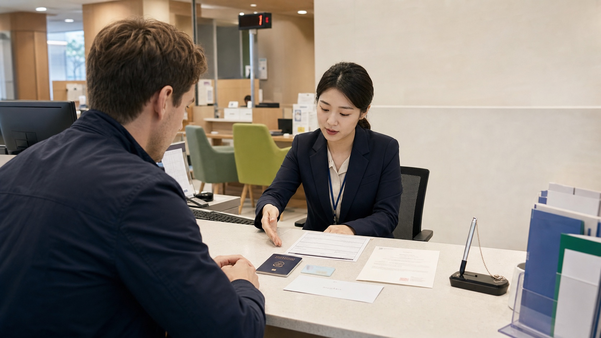
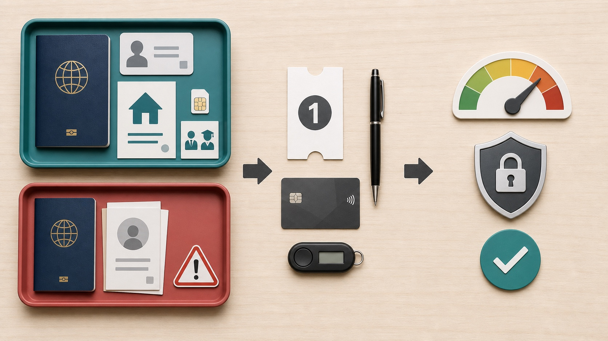

Opening a bank account in Korea is usually realistic for a registered foreign resident, but it is not a guaranteed walk-in service for every visitor. The branch must verify your identity and may ask why you need the account. A residence card, Korean address, Korean phone number in your name, and proof of employment or study make the process much smoother. A passport-only application can be possible at some banks or branches, but it is more likely to receive extra checks, limited services, or a refusal.
The best practical strategy is to call a branch with foreign-language support, ask for its current document list, and bring more evidence than the minimum. Do not choose a bank only because its app looks convenient. First confirm that the branch can open the account, issue a debit/check card, enroll you in mobile banking, and set transfer limits that fit your rent, salary, tuition, or daily-payment needs.
| Your situation | Best approach |
|---|---|
| You have a residence card, Korean address, and local phone | Book or visit a foreigner-friendly branch with proof of work, study, or another clear transaction purpose. |
| You are waiting for your residence card | Ask whether the branch accepts a passport now and can update the account later; expect stricter limits or a second visit. |
| You are a short-term tourist | Do not assume you can open a normal resident account. Use an overseas card, cash, or a tourist payment product instead. |
| You need salary or scholarship deposits | Bring the employment contract, company certificate, school enrollment letter, or scholarship document showing why the account is needed. |
| You need to send money abroad | Ask about foreign-remittance enrollment, required supporting documents, exchange rates, and fees before choosing the bank. |
Korean banks conduct real-name and customer-verification checks. The Financial Supervisory Service's foreigner guide explains that a passport or foreigner residence card can be used as identification, but the branch may request other documents to verify identity and transaction purpose. Woori Bank's current foreign-customer page similarly says to bring a passport or residence card and warns that employment proof, pay records, income proof, utility bills, or other documents may be requested.
In practice, a long-term resident with a residence card has the clearest path. Employees, students, spouses, and other registered residents can normally explain a concrete use such as salary, tuition, rent, utilities, or everyday spending. A tourist asking for an account without a Korean address or continuing relationship may not satisfy the branch's checks. Bank policy, visa status, nationality-related compliance checks, and the individual product can all affect the decision.
Korea introduced mobile foreigner residence cards in 2025. The Financial Services Commission announced that registered foreign residents could use the mobile card for in-person account opening at an initial group of six banks, with expansion planned. Acceptance has broadened, but implementation can still differ by bank and branch. Carry the physical card and passport when possible instead of relying on the mobile credential alone.
Bring original documents, not only phone photos. A branch may copy them and may reject an expired or damaged ID.
If your passport name and residence-card name are displayed differently, ask the branch which spelling it will register. Name mismatches can later break salary deposits, phone verification, card enrollment, or international transfers.

The visual separates the strong resident-document path from the more uncertain passport-only path. Both end with a branch visit, but only the bank can decide which products and limits it will approve.
Korean banks may restrict a new account when the transaction purpose has not been fully verified or fraud-prevention controls require a lower-risk setup. The exact restriction is bank-specific. It may affect ATM withdrawals, online transfers, mobile banking, or the amount you can move each day.
Do not accept a vague statement that the account is "limited." Ask the teller to write down or show you:
Never invent a job, salary, or payment purpose to obtain a higher limit. Bring the genuine contract or invoice and let the bank explain the correct route.
Opening a basic account itself is often free, but using it is not always free. Compare ATM fees outside the bank's network, transfer fees, replacement-card fees, overseas card settings, foreign-currency conversion, and international remittance charges. Salary or student products may waive some fees only after a qualifying deposit or automatic payment.
A Korean check card is a debit card that normally spends from the available account balance. Ask whether it supports online payments, post-paid public transportation, and overseas use; these features are not automatic. A credit card is a separate credit decision and usually needs stronger income and residence evidence.
Set up the bank's official mobile app at the branch if possible. Confirm the app publisher and download link from the bank's website, not from a message or advertisement. Ask whether you need a security card, OTP token, digital certificate, or additional identity step. If you change your Korean phone number or renew your residence card, update the bank promptly.
Deposit protection information on some older bank pages is outdated. The Financial Services Commission states that, from September 1, 2025, eligible deposits at KDIC-covered institutions are protected up to KRW 100 million per depositor per institution, including applicable principal and interest. Not every financial product is protected; market-performance-linked funds are an example of an unprotected product. Check the product's current deposit-insurance notice rather than assuming every balance has the same coverage.
A deposit account is not a ticket purchase, so there is usually no "refund" of an opening fee. To close it, you receive or transfer the remaining eligible balance after pending transactions, fees, and legal holds are handled. The bank may require an in-person visit with the ID used at opening, the bankbook if one was issued, and your registered signature or seal.
Before leaving Korea, do not close the account too early. Wait until your last salary, utility adjustment, tax settlement, housing-deposit return, and card charge have cleared. Then:
International remittance rules and supporting-document requirements depend on the amount, purpose, tax status, and bank. Ask the bank for a written fee and exchange-rate explanation before transferring a large balance.
If you are visiting for a few weeks, a Korean bank account may add more setup than value. Keep at least two internationally enabled cards, notify your issuers about travel, and carry a modest cash backup. A tourist-oriented prepaid product can be useful, but compare load, withdrawal, refund, and remaining-balance rules.
For cash access, use bank-operated or clearly marked global ATMs and review the displayed fee before confirming. For local app payments, remember that a Korean account alone may not solve Korean-phone or identity-verification requirements. Read the related payment and ATM guides below before depending on a single method.
Possibly at some banks or branches, but do not plan around it. A passport-only applicant without a Korean address, phone, or continuing transaction purpose faces more checks and may be refused or offered limited services.
Bank guidance recognizes a passport or residence card as identification, but a residence card is the stronger practical route for resident services. Individual banks may require it for the product, app, card, or limit you want.
Basic account opening is often free, but card issuance, replacement, ATM use, transfers, remittance, or particular products can have fees. Ask for the current fee schedule.
Some banks offer non-face-to-face services to eligible foreign residents, and Korea has expanded digital ID verification. Eligibility differs by bank, identity credential, phone ownership, residence status, and app. A branch visit remains the most reliable first route.
Some branches can issue or arrange a check/debit card during account opening; others mail it or require another step. Confirm online, overseas, and transportation functions separately.
The bank may have opened a purpose-limited or fraud-prevention account. Ask exactly which limits apply and which genuine documents or account history are needed for review.
Eligible deposits at KDIC-covered institutions are protected up to KRW 100 million per depositor per institution under the limit effective September 1, 2025. Confirm that the specific product is covered.
Sometimes, but your bank may need updated residence, tax, phone, and address information, and services can be restricted after documents expire. Ask before departure and keep a secure way to receive bank notices.
For a foreign resident, the safest path is an in-person visit with a passport, residence card, Korean address, local phone, and clear proof of why the account is needed. Ask about the account, check card, mobile banking, remittance, fees, and every transfer limit before leaving. Passport-only opening and online opening can be possible, but neither is universal. Verify the branch's current rules, protect your credentials, and never lend the account to someone else.